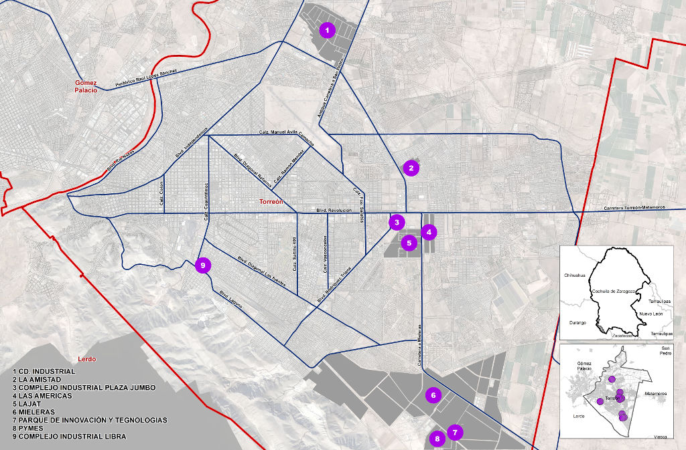

Una radiografía de cómo se encuentra Torreón en materia industrial, el hospedaje que se puede ofrecer al inversionista, las industrias y empresas instaladas y la información de la calidad de vida e indicadores económicos como municipio, se pueden encontrar en la Guía de Parques Industriales 2016. Un documento publicado por la Dirección General de Desarrollo Económico y el Instituto Municipal de Planeación y Competitividad (IMPLAN).
Se trata de un directorio que destaca la información económica, geográfica, demográfica, educativa de Torreón y La Laguna, así como los clusters, las empresas íconos con las que se cuenta y los atractivos turísticos. Se destacan aspectos como el hecho de que la ciudad, de acuerdo con la revista Financial Times es la cuarta mejor evaluada en categoría Costo-Beneficio para invertir en América y la primera en México. Financial Times califica 421 ciudades para atracción de inversión extranjera.
El director de Desarrollo Económico en Torreón, Jaime Russek Fernández explicó que esta publicación surge porque "tenemos que tener un censo en materia de empleo y en materia de desarrollo de la ciudad, quiénes somos, cuántos somos y dónde estamos. Las áreas de la ciudad crecen con diferentes giros o sectores y a diferentes ritmos".
"Sabemos que en Mieleras se está desarrollando muy fuerte el sector metalmecánico, el sector industrial y de autopartes; que en el centro tenemos el sector comercio y servicios, y en el norte un desarrollo importante de vivienda. Además el área de Gómez Palacio en materia alimenticia. Como zona conurbada estamos obligados a vernos así, no podemos ver a un Torreón independiente de las demás ciudades".
Señaló que nuestras debilidades como región ahora son nuestras fortalezas, "Hay dos mitos que Torreón tenía hace tiempo: que no tenemos tierra para las inversiones y que no tenemos agua, esto nos puso en desventaja con las demás regiones del país. Hoy tenemos tierras públicas y privadas y tenemos agua suficiente".
Añadió que "la tierra es barata comparado con las principales regiones que competimos, tenemos mano de obra suficiente y calificada, más o menos 15% debajo de la zona de Saltillo, Ramos Arizpe y del Bajío. Esas debilidades las estamos convirtiendo en fortalezas".
Destacó que a las industrias y la empresa como tal lo que les interesa son las utilidades,
"Van a venir a invertir donde puedan trabajar con costos bajos y productos de calidad, donde puedan transportar sus mercancías, ya sea hacia el norte o hacia el sur con la conectividad adecuada. Y esto se puede encontrar en la Laguna", puntualizó.
Mencionó el ejemplo de la empresa Yura, que recientemente se instaló y que aquí encontró cercanía y conectividad hacia Pesquería Nuevo León, donde tiene su principal cliente que es Kía Motors. Dijo que otras empresas pueden trasladar sus productos fácilmente al Bajío donde se ubican grandes armadoras de automóviles.
"Toda inversión que viene a la región, siempre busca las ventajas competitivas que tengas respecto a otras zonas del país. Ahorita tenemos muchas ventajas competitivas que antes eran desventajas", expresó.
Por ejemplo, el sitio propiedades.com califica a La Laguna como la cuarta mejor ciudad en México para trabajar y la primera con mejor mercado laboral, entre zonas de más de 1 millón de habitantes.
Sus principales ventajas señaladas son: potencial económico, conectividad, alto costo-beneficio, alto índice de calidad de vida y clima de negocios.
El director de Desarrollo Económico enfatizó de la importancia de Yura, que fue la primera que rompió el círculo vicioso de que no aterrizaban industrias de gran calado a la región, es decir de más de 4000 empleos. Detrás de Yura le siguieron otras como Hyosung, Lear y Frape (de capital lagunero); recientemente anunciadas. Se tenía que romper con esa sequía de inversiones para así despertar el interés por la región; mostrar nuestras fortalezas a los posibles inversionistas y ponernos en el radar de los que toman las decisiones.
La Guía de Parques Industriales ofrece también información sobre los sueldos y salarios de Torreón y La Laguna en comparación con otras regiones, la conectividad terrestre, aérea, ferroviaria, servicios de hospedaje, hoteles, información de salud y de universidades, que le dan servicio a la Comarca y a gente de Durango, Zacatecas, Chihuahua, etc.
Russek destacó que en "La Laguna hemos tenido de todos los giros y sectores: agrícola, minero, maquila, agroindustria, metalmecánica, automotriz, de salud y de servicios; tenemos muchos giros, eso hace la mano de obra de la región muy especializada". Finalmente comentó que el directorio destaca el hecho de que Torreón es la primera ciudad en contar con alumbrado Led en su totalidad, en particular, resaltó el alumbrado especializado para las zonas industriales como el instalado en Mieleras.
Parques industriales
- Parque industrial Plaza Jumbo
- Parque Industrial las Américas
- Parque Industrial Lajat
- Parque Industrial Oriente
- Parque Industrial La Amistad
- Parque Ciudad Industrial
- Parque Industrial PYMES
- Parque Industrial Tecnológico de Torreón (PITT)
- Parque Industrial Ferropuerto Laguna
- Área Mieleras Complejo Industrial Libra
Salarios promedio
| Región | Promedio 2014 |
|---|---|
| Torreón | $ 6,472.12 |
| La Laguna | $ 5,784.74 |
| Nacional | $ 5,895.42 |
| Hermosillo | $ 8,057.30 |
| Querétaro | $ 6,445.61 |
| Monterrey | $ 6,841.53 |
| DF | $ 6,548.34 |
| Chihuahua | $ 6,240.43 |
Porcentajes de participación de cada sector a la producción
| Sector | Laguna | Torreón |
|---|---|---|
| Industria Manufacturera | 72.85% | 74.96% |
| Comercio | 9.79% | 9.03% |
| Servicios | 8.95% | 9.29% |
| Construcción | 2.20% | 2.33% |
| Minería | 1.25% | 1.46% |
| Agricultura, Información en medios masivos, Transporte, Generación y distribución de energía eléctrica | 4.97% | 0.08% |
Mapa de los Parques Industriales en Torreón
